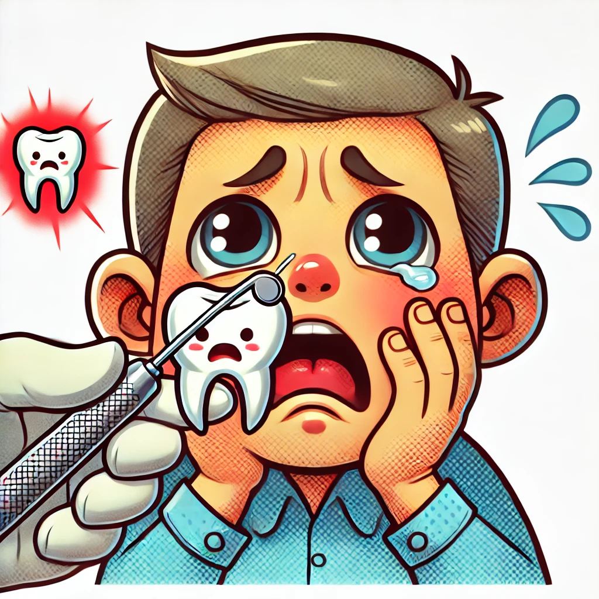

CS 463G & CS 663
(Intro to) AI
Lecture 22: Probabilistic Inference
Fall 2026
A robot sees an umbrella. Does that establish that it is raining?
An observation can support several explanations. What numbers would we need to compare them?
We need a probability model relating weather and umbrella use. Inference turns that model and the observation into a conditional distribution.
Probabilistic inference answers queries such as P(\text{Query} \mid \text{Evidence}).
Examples:
The distribution is the model; inference is how we ask questions of the model.
A full joint distribution assigns probability to every complete assignment of variables.
For weather W and umbrella use U:
| Weather | Umbrella | P(W,U) |
|---|---|---|
| Sunny | Yes | 0.1 |
| Sunny | No | 0.6 |
| Rainy | Yes | 0.2 |
| Rainy | No | 0.1 |
P(U=\text{Yes})=0.1+0.2=0.3
The observation keeps only the two rows with U=\text{Yes}.
| Weather | Joint mass with umbrella | Conditional probability |
|---|---|---|
| Sunny | 0.1 | 0.1/0.3=1/3 |
| Rainy | 0.2 | 0.2/0.3=2/3 |
P(W=\text{Rainy}\mid U=\text{Yes})=\frac{0.2}{0.3}=\frac23.
Rain becomes more likely, but the observation does not make it certain.
Suppose we ask P(C\mid T) in a model with variables C,T,H.
| Role | Variable | What we do |
|---|---|---|
| Query | Cavity C | Keep both possible outcomes |
| Evidence | Toothache T | Fix to the observed value |
| Hidden | Probe catches H | Sum over possible values |
An unobserved variable is not automatically false. Why would setting H=\text{false} change the question?

Toy Boolean variables:
An event such as C means C=\text{true}.
| T,H | T,\neg H | \neg T,H | \neg T,\neg H | |
|---|---|---|---|---|
| C | 0.108 | 0.012 | 0.072 | 0.008 |
| \neg C | 0.016 | 0.064 | 0.144 | 0.576 |
All eight nonnegative entries sum to 1.
It is easier to use the complement:
P(C \lor T)=1-P(\neg C,\neg T)
From the full joint table:
P(\neg C,\neg T)=P(\neg C,\neg T,H)+P(\neg C,\neg T,\neg H)
P(\neg C,\neg T)=0.144+0.576=0.72
P(C \lor T)=1-0.72=0.28
To compute a marginal, sum out variables that are not in the query.
P(C)=\sum_T\sum_H P(C,T,H)
For the cavity row:
P(C)=0.108+0.012+0.072+0.008=0.2
“Summing out” reduces a distribution over many variables to a distribution over fewer variables.
Keep T=\text{true} and sum over both values of H.
| Quantity | Matching joint mass |
|---|---|
| Numerator P(C,T) | 0.108+0.012=0.12 |
| Other outcome P(\neg C,T) | 0.016+0.064=0.08 |
| Evidence probability P(T) | 0.12+0.08=0.20 |
P(C \mid T)=\frac{P(C,T)}{P(T)}=\frac{0.12}{0.2}=0.6
For query outcomes ordered as (C,\neg C), first collect joint masses:
w=(0.12,0.08).
Normalize with:
\alpha=\frac{1}{0.12+0.08}=5
\bigl(P(C\mid T),P(\neg C\mid T)\bigr)=(0.6,0.4).
Normalization divides nonnegative weights by their positive sum. Here that sum is the evidence probability P(T).
Query Q, evidence E=e, hidden variables H:
\begin{aligned} w(q)&=\sum_h P(Q=q,E=e,H=h),\\[0.4em] P(Q=q\mid E=e)&=\frac{w(q)}{\sum_{q'}w(q')}. \end{aligned}
Keep query outcomes separate until the final normalization.
Now we observe both toothache and a probe catch: T,H.
| Query outcome | Matching joint mass |
|---|---|
| C | 0.108 |
| \neg C | 0.016 |
What is P(C\mid T,H)? Is there any hidden variable left to sum out?
P(C\mid T,H)=\frac{0.108}{0.108+0.016}\approx0.871. No hidden variable remains in this three-variable model.
Observe a toothache but no probe catch: T,\neg H.
| T,H | T,\neg H | \neg T,H | \neg T,\neg H | |
|---|---|---|---|---|
| C | 0.108 | 0.012 | 0.072 | 0.008 |
| \neg C | 0.016 | 0.064 | 0.144 | 0.576 |
P(C\mid T,\neg H)=\frac{0.012}{0.012+0.064}\approx0.158.
| Available evidence | Probability of C |
|---|---|
| None | 0.200 |
| Toothache | 0.600 |
| Toothache and probe catches | 0.871 |
| Toothache and probe does not catch | 0.158 |
More evidence can raise or lower a particular hypothesis’s probability. The direction depends on what was observed.
The same joint mass appears in both numerators:
P(C,H)=0.108+0.072=0.18.
| Question | Calculation |
|---|---|
| Probe catches, given cavity | P(H\mid C)=0.18/0.20=0.90 |
| Cavity, given probe catches | P(C\mid H)=0.18/0.34\approx0.529 |
Why do the answers differ even though both use P(C,H)?
They condition on different events, so they divide by different evidence probabilities.
From the toothache table:
P(T)=0.20,\quad P(H)=0.34,\quad P(T,H)=0.124.
Are toothache and probe catches independent in this model?
P(T)P(H)=0.20\times0.34=0.068\ne0.124. No. Multiplying the marginals would give the wrong joint probability.
Within the cavity group:
P(T\mid C)=0.6,\qquad P(H\mid C)=0.9. P(T,H\mid C)=\frac{0.108}{0.2}=0.54=0.6\times0.9.
Within the no-cavity group:
P(T\mid\neg C)=0.1,\quad P(H\mid\neg C)=0.2, P(T,H\mid\neg C)=0.02=0.1\times0.2.
This table has T\perp H\mid C, although T and H are not marginally independent.
| Mistake | What goes wrong |
|---|---|
| Treat an unobserved variable as false | Adds evidence that was never observed |
| Sum the numerator across both query outcomes | Loses the distinction we are trying to infer |
| Use the full table total as denominator | Fails to condition on the evidence |
| Multiply marginals without checking independence | Changes the probability model |
| Normalize weights that sum to zero | Conditions on an impossible event in the model |
For n binary variables, a full joint table has:
2^n
entries.
| Variables | Entries |
|---|---|
| 10 | 2^{10}=1024 |
| 50 | 2^{50}\approx 10^{15} |
| 100 | 2^{100}\approx 10^{30} |
The table is exact, but exactness becomes useless if we cannot store or query it.
Full joint inference requires summing many entries.
Structured representations reduce the work by exploiting conditional independence.
P(C,T,H)=P(C)P(T\mid C)P(H\mid C).
Bayesian networks can store the distribution compactly. Exact inference can still be expensive, depending on the graph.
A robot occupies either the left or right room. Its sensor flashes or stays dark.
| Location | Flash | Dark |
|---|---|---|
| Left | 0.36 | 0.24 |
| Right | 0.08 | 0.32 |
Compute P(\text{Left}), P(\text{Left}\mid\text{Flash}), and P(\text{Flash}\mid\text{Left}).
0.60,\qquad \frac{0.36}{0.44}\approx0.818,\qquad \frac{0.36}{0.60}=0.60.